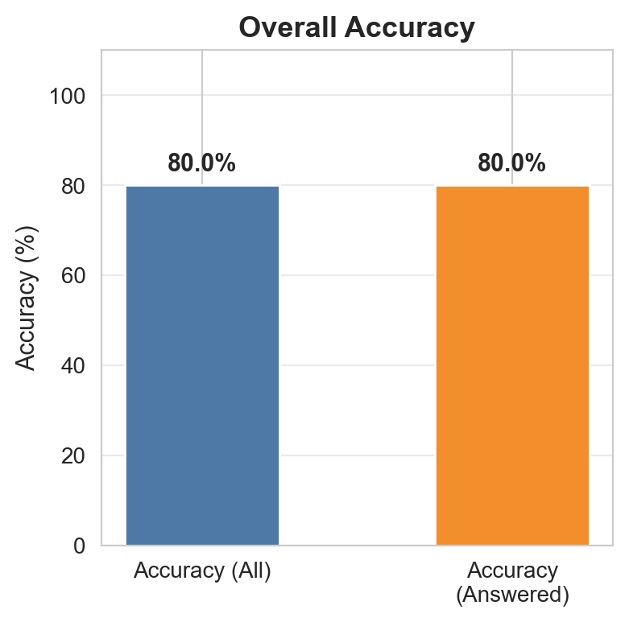
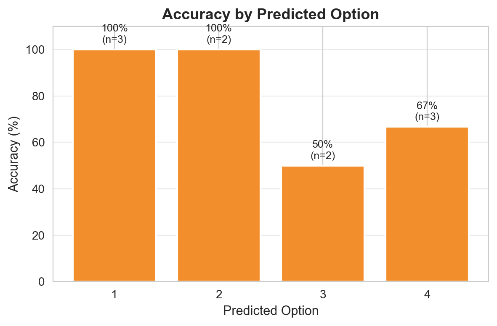
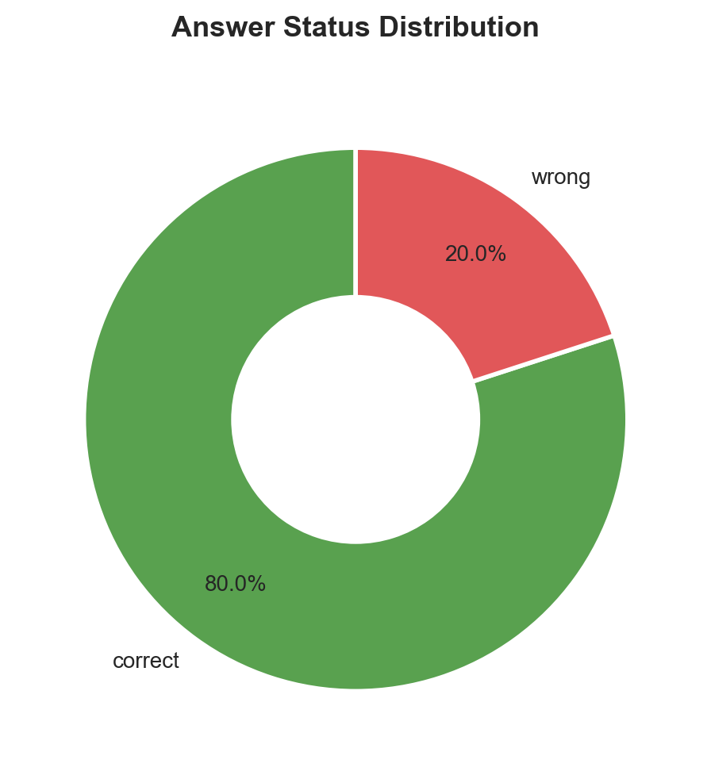
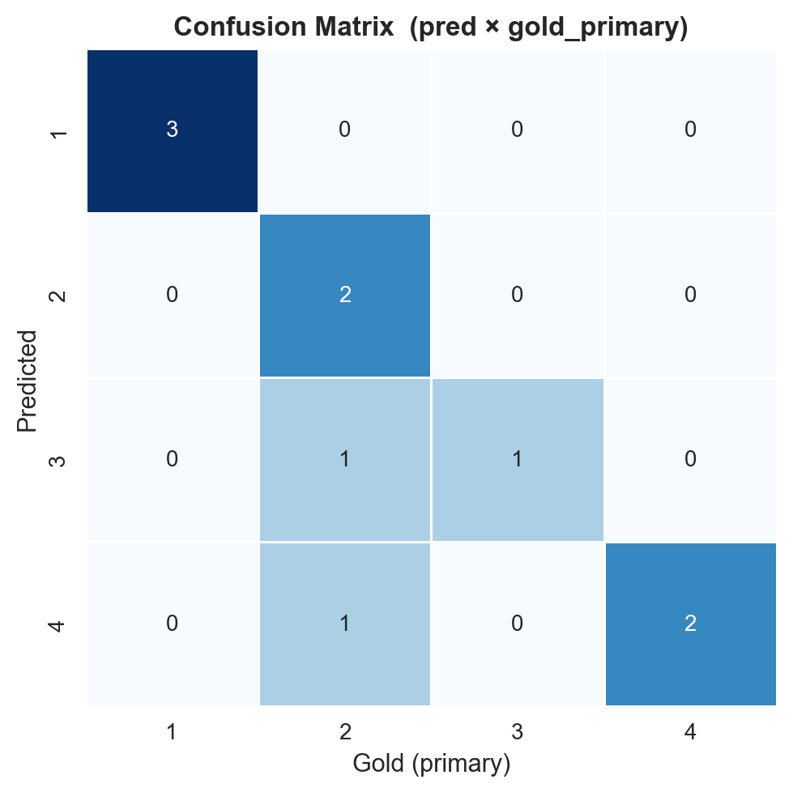
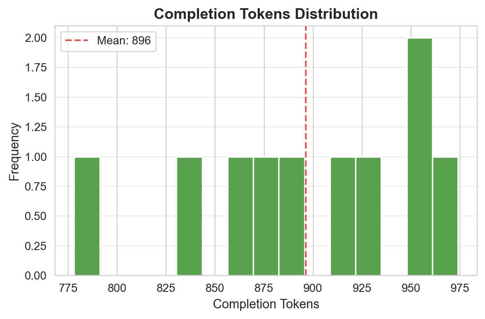
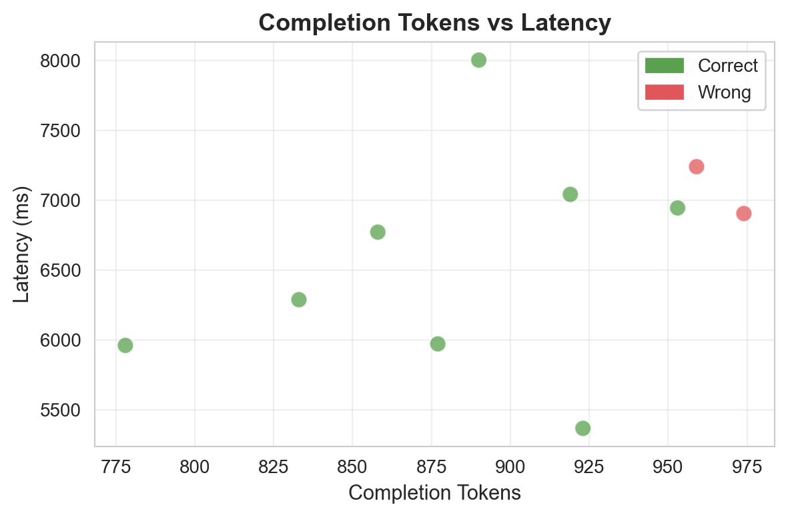
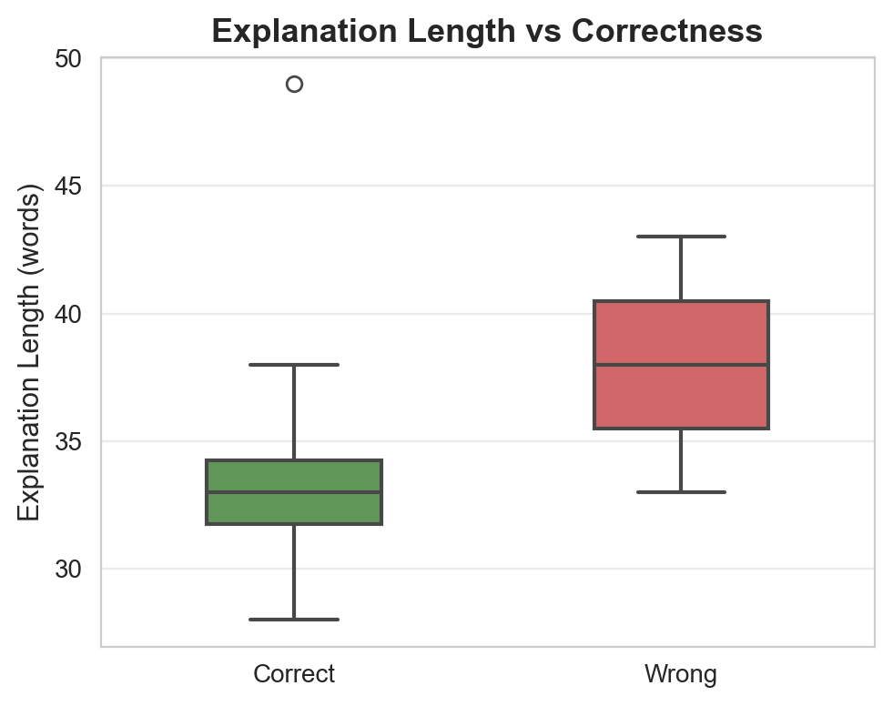
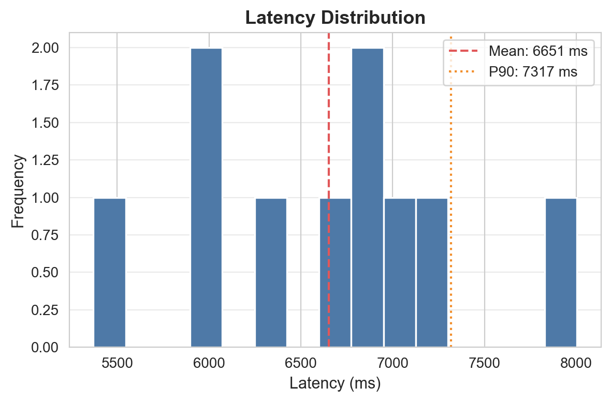
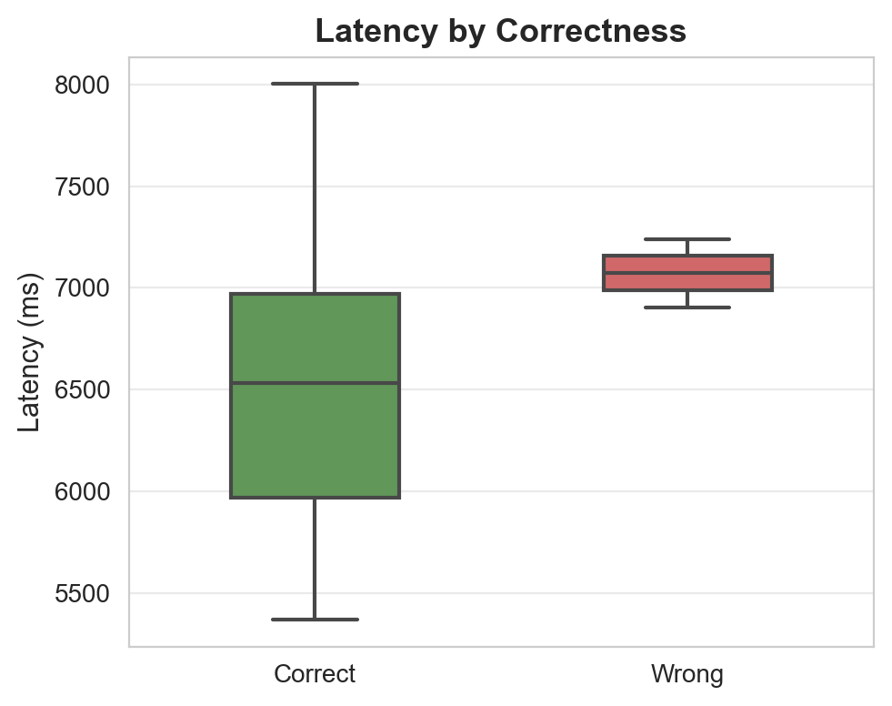

سوالات: 10 | پاسخدادهشده: 10 | بیپاسخ/خطا: 0

دقت کلی مدل

دقت به تفکیک گزینه

توزیع وضعیت پاسخها

ماتریس درهمریختگی

توزیع توکنهای خروجی

توکن vs تأخیر

طول توضیح vs صحت

توزیع تأخیر

تأخیر به تفکیک صحت
| ID | پاسخ مدل | پاسخ صحیح | نتیجه | تأخیر (ms) | توکن | خلاصه استدلال |
|---|---|---|---|---|---|---|
| 1 | 3 | 3 | ✅ | 8003 | 890 | مطابق ماده ۷۳۳ قانون مدنی، در صورت فسخ بیع، عقد حواله صحیح باقی میماند و از آنجا که آثار عقد بیع متوجه موکل است، مسئولیت استرداد ثمن بر عهده بایع (ب)... |
| 2 | 1 | 1 | ✅ | 6773 | 858 | دلیل لبّی (مانند عقل و عرف) فاقد لفظ و اطلاق است، لذا طبق قواعد اصولی در مقام استناد به آن باید به قدر متیقن اکتفا کرد و اصول لفظی در آن راه ندارد... |
| 3 | 2 | 2 | ✅ | 6290 | 833 | مطابق مواد ۳ و ۴ قانون تشدید مجازات اسیدپاشی مصوب ۱۳۹۸، اِعمال تعلیق، تعویق و آزادی مشروط ممنوع است اما تخفیف مجازات مشروط به عدم تنزل از حداقل مجازات... |
| 4 | 1 | 1 | ✅ | 5370 | 923 | مطابق بند پ ماده ۲ قانون جرم سیاسی مصوب ۱۳۹۵ توهین به رؤسای سه قوه و رئیس مجمع تشخیص مصلحت نظام در صورت وجود انگیزه اصلاحی جرم سیاسی محسوب میشود و اد... |
| 5 | 4 | 4 | ✅ | 7043 | 919 | ابراء یک ایقاع است و طبق اصول حقوقی و ماهیت سقوط تعهدات، درج خیار شرط و حق فسخ در ایقاعات (به جز موارد استثنایی) راه ندارد و موجب بازگشت دین نمیشود... |
| 6 | 4 | 2 | ❌ | 6906 | 974 | با توجه به اینکه صدور قرارهای اعدادی به معنای ختم مذاکرات نیست، استرداد دعوا طبق بند ب ماده ۱۰۷ قانون آیین دادرسی مدنی بدون رضایت خوانده پذیرفته و قرا... |
| 7 | 2 | 2 | ✅ | 6946 | 953 | مطابق ماده ۳۰۳ قانون آیین دادرسی مدنی، ارسال لایحه حاوی دفاع (انکار ادعا) توسط خوانده موجب حضوری شدن حکم است و اشتباه دادگاه در توصیف رأی مانع از جریا... |
| 8 | 1 | 1 | ✅ | 5974 | 877 | مطابق ماده ۲۰۹ لایحه قانونی اصلاح قسمتی از قانون تجارت، تصمیم انحلال و اسامی مدیران تصفیه باید ظرف ۵ روز به مرجع ثبت شرکتها اعلام شود؛ در حالی که انت... |
| 9 | 4 | 4 | ✅ | 5963 | 778 | مطابق اصل ۱۴۱ قانون اساسی، تصدی شغل مشاوره حقوقی برای کارمندان دولت صراحتاً ممنوع شده است در حالی که سایر گزینهها در فهرست ممنوعیتهای این اصل قرار ن... |
| 10 | 3 | 2 | ❌ | 7241 | 959 | مطابق اصل ۱۶۷ قانون اساسی و ماده ۳ قانون آیین دادرسی مدنی، قاضی مکلف است حکم را در قوانین مدونه بیابد و استناد به فقه تنها در صورت فقدان قانون مجاز اس... |